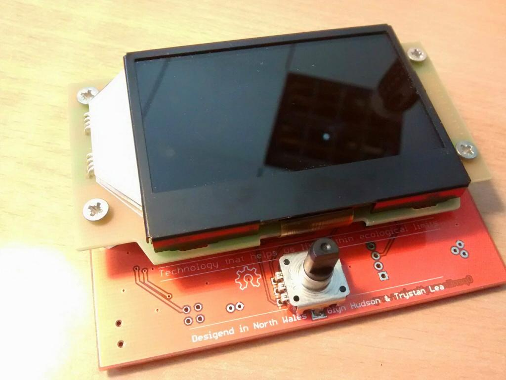
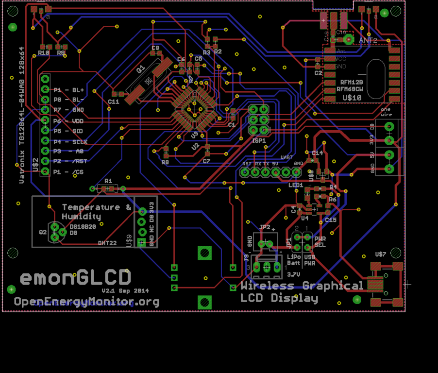
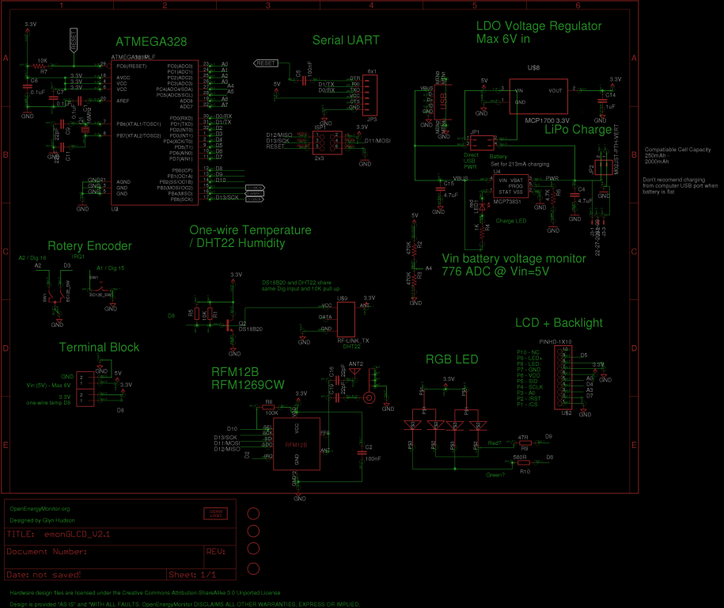
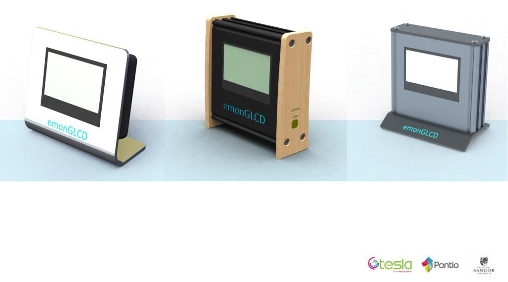

For sometime now the emonGLCD has been lagging behind other OpenEnergyMonitor hardware units in terms of development, we're still selling it only in thru-hole DIY kit form. We've been thinking about updating it to SMT pre-assembled for some time, however we've been dragged our heels somewhat since there has been thoughts that maybe a smartphone app could fill the same function. However I believe a physical LCD display unit fills a slightly different role to a smartphone app. There is certainly value to having an always-on low power LCD display located in a prominent location displaying current power consumption and or generation. I have found the emonGLCD with the ambient indication tri-colour LED's to be a really useful easy-to-read indication of solar PV import / export at any given time. Doing a quick Google search shows that there are lots of emonGLCD being used and customized for all sorts of purposes we could not even have though of! For example: heat pump monitor, temperature measurements, electric car charge rate etc. With this in mind, we have decided to make an SMT version of the emonGLCD keeping the designs largely the same (same LCD panel size and same controller chip ST7565). This will mean the current emonGLCD firmware sketches should run on the new unit with little or no modifications.
I would be interested to heard your thoughts on what you would like in a new version of the emonGLCD?
Over the past few weeks I've made a start to get a prototype, here is the main design criteria and features so far:
- ST7565 128 x 64 LCD panel with integrated RGB backlight, specifically this Vatronix unit (to replace the LED's on the current version)
- Single front facing rotary encoder with push-to-select (to replace the three push buttons the the current)
- Option for lithium battery pack with USB battery charging circuit and battery voltage monitor
- Arduino compatiable ATmega328 with RFM12B / RFM1269CW
- Option for on-board DS18B20 and DHT22 temperature and humidity sensors
Using SMT assembly and lower cost LCD unit and enclosure we should be able to reduce the price of the emonGLCD compared to the current version.
Yesterday I sent off for the first prototype PCB revision:


These images and more can be viewed in the emonGLCD V2 SMT Development album on G+, I will be periodically updating this album with development photos as things develop!
https://plus.google.com/photos/114424977493521882459/albums/6016575729643776881#
Enclosure
The enclosure is an important part of the emonGLCD design considerations. We plan to move to a 'proper' custom made enclosure for the new emonGLCD. These are the main options available:
1.) 3D printed (for small volumes and prototyping, not really possible for 500+ per production run)
2.) layered laser cut plywood or acrylic (like the Pimoroni Raspberry Pi cases)
3.) Injection molded plastic
I'm specifically interested in exploring if/how an enclosure could be made with lowest embodied energy and maximum recyclability.
We have not yet made much progress on case design nor have we got a designer or manufacturer in mind. If you would like to work with us please get in touch. Equally if you have some ideas on enclosure design I look forward to hearing.
Re: emonGLCD V2 SMT Prototype Development
Looks good wonder how long you will get with a lipo.. My v1 seems top get 10 day max from 2700mah lipo.
Also the option to change the lipo charge rate would be great as a 6000mah battery would take ages at 250mah
I like the current laser cut wood finish. Seems to fit with the product. But understand that maybe a fully fitted case may be better. (although would the dht22 work then)
Re: emonGLCD V2 SMT Prototype Development
True, we're not expecting super long battery life. We're not planning on shipping by default with lipo included however including an option to add a lipo on the PCB seems like a good idea. For some users being able to make the unit truly wireless for even a few hours to move around a building could be useful. We also hope to put some work into optimizing the software for lower power consumption which should increase battery life considerably.
I know, charging will be slow however I didn't want to overload a USB port.
I also like the laser cut finish but it does not give enough protection in some circumstances.
Re: emonGLCD V2 SMT Prototype Development
Couple of things,
Can the V2 GLCD send temp data to the a Pi running emon? Also would there be an advantage in using a eink display? The updates happening every 10 seconds or so would not tax the display refresh rate, the power consumption would be lower and it would be very readable in daylight.
I am currently waiting to get assigned a programing student from our local University to build a android/ios app for emoncms.
The app would allow end users to enter the API key and then add feeds to display and label them. That way the displayed data can have meaning to the owner. The display would only be text/numerical (no dials graphs etc) as the purpose is to have a status display a bit like the glcd.
Great work btw.
Nathan
Re: emonGLCD V2 SMT Prototype Development
Glyn
I use a lipo in the current version and get 15+days out of it. Its a 6000mah battery. i can get longer but sleeping the processor makes the top leds flicker.
I would also like to see a eink display but not sure if this would help battery life.
Keep up the work guys.
Rob.
Re: emonGLCD V2 SMT Prototype Development
The prototype PCB has arrived and seems to all fit together well, looking forward to assembling and testing this week.

Another unit of interest I noticed, of interest this week was a new RasPi TFT LCD enclosure from Adafruit (http://www.adafruit.com/products/1892). Could make a nice display, however I still think there is a place for a purpose built LCD unit like the emonGLCD.
Re: emonGLCD V2 SMT Prototype Development
I plan to build my unit into the kitchen wall embedding it into an unused double socket in the kitchen.
My current glcd is eager to be retired and despite buying a socket faceplate I havent got round to cutting :-)
I wonder if in the design it would be possible to have some sort of way of replacing the buttons with a capacitive or resistive switching so that a finger would flick between screens if required.
I currently flick through pages using the buttons, if not I guess auto page flip would be the answer.
Re: emonGLCD V2 SMT Prototype Development
Nice idea, I've heard of Nathen Chantrell using a touch screen layer over the top of the LCD, see section 3 'extend it' on the emonGLCD module page for video and source code: http://openenergymonitor.org/emon/emonglcd
The new unit will use a rotary encoder which has a built in push button on the front of the screen, the will allow you to use it's function after it's been embeded in a plug. Looking forward to seeing a photo of the installation :-)
Re: emonGLCD V2 SMT Prototype Development
Hi guys,
Here's a quick update, since my last post I've been testing the various components of the emonGLCD V2 design, in particular I'm impressed with the rotary encoder, it's very responsive and will be great for scrolling through various screens and making selections.
See G+ Album for photos: https://plus.google.com/photos/114424977493521882459/albums/6016575729643776881
I've just finished the next PCB revision. Due to the poor viewing angles of the RGB LCD choose for the design it was decided to go for a slightly larger LCD with a white back light (please ignore the stray dots on the LCD, it was a software issue):
To compensate for lack of RGB back light a couple of RGB LED's have been added to the top of the board. Here's the change log for the new prototype:
Work is also continuing on the enclosure design, we are working with some local designers to design an enclosure which we will 3D print initially to test the design then hopefully get into injection molding using PLA bio-plastic.


Re: emonGLCD V2 SMT Prototype Development
Is it possible to add more RAM memory? Or use a LCD display that does not need to keep a buffer of all positions?
I use my emonGLCD to display graphs of various nature, outside temp, inside temp etc.
The problem is, even using simple compression (storing values as byte offsets) i can only manage to store 2 graphs, the current LCD library eats up a lot of RAM.
/ David
Re: emonGLCD V2 SMT Prototype Development
Seconded. (Though it might mean moving away from the ATMega 328P.)
Re: emonGLCD V2 SMT Prototype Development
Good idea, have you got any suggestions for a suitable chip?
Update: wow, just seen the photo of your emonGLCD, that's very impressive. I can see the need for more memory! Would you be able to share your code with the forum? It would be great to do a guide blog post with your emonGLCD temperature graph application. I'm sure many would be interested. We will obviously give you full credit for your work
Re: emonGLCD V2 SMT Prototype Development
just a thought, but what about a rot encoder with build in rgb led?
Re: emonGLCD V2 SMT Prototype Development
Nice idea, I looked into that but couldn't find a suitable unit at a reasonable cost also with a push button
The most suitable rotary ender I found is Alps EC12E2424407, they don't seem to offer any RGB ones: http://octopart.com/ec12e2424407-alps-757467
Re: emonGLCD V2 SMT Prototype Development
How about the mightymega atmega 1284p
http://www.atmel.com/devices/atmega1280.aspx
http://maniacbug.wordpress.com/2011/11/27/arduino-on-atmega1284p-4/
Feature 328P 1284P 2560P
Price $2.99 $4.66 $11.28
RAM 2k 16k 8k
Flash 32k 128k 256k
EEPROM 1k 4k 4k
UART 1 2 4
IO Pins 23 32 86
Interrupts 2 3 8
Analog Inputs 6 8 16
[post held in the moderation queue - 2 similar posts deleted. Moderator RW]
Re: emonGLCD V2 SMT Prototype Development
Interesting idea, cost for 1284p in 1K quantity is £3 vs £1.18 for ATmega328 however this could be a justifiable cost of it increases the usefulness and future proofness of the emonGLCD. I wonder if using the 1284p could be better than 328p with aux sram chip. Does anyone have experience using the 328p with a ram chip and lcd? I think i2c would be preferred communication between MCU and ram chip since both the rf and lcd use the ISP bus. Currently the memory on the 328p is sufficient for what we are doing on the emonGLCD (displaying current power etc), however I can see from looking at how the community have been extending the emonGLCD the memory ceiling of the 328p is reached quite quickly. .
Re: emonGLCD V2 SMT Prototype Development
Just to compare: the ST micro electronics M24M01 EEPROM chip looks like a suitable 128K I2C memory chip, this chip currently costs £1.01 from Farnell. So much lower cost for more memory.
This is the same chip as JeeLabs use in their memory plug: http://www.digitalsmarties.net/products/memory-plug
Could this be the better option compared to the 1284p since we don't need the extra I/O the 1284p offers?
Re: emonGLCD V2 SMT Prototype Development
I am using Microchip serial RAM 23K256 (32kByte, ~€1), but not with an ATmega. This has SPI only, but can be bit-banged if there are enough I/O lines left.
Re: emonGLCD V2 SMT Prototype Development
Thanks Glyn, I'll look into making the code public, i will probably have to clean it up a bit first.
Aside from the actual glcd i have a python script running on my pi that every minute fetches data from emoncms.org and posts them to oemgateway via socket, witch then in turn sends out to the glcd, this is because i display some data that i have gathered from other sources (not rfm12b 833).
/ David
Re: emonGLCD V2 SMT Prototype Development
With the new changes does this mean you would loose the ability to change the backlight colour?
That was my favourite update :-(
Currently one of my glcd pages is the charge rate of the Nissan Leaf It would be great to set the colour based on the current rate of charge.
My re-purposed emontx2 reacts to my pv output to ramp the charge rate of the car so I guess I could use the rotary encoder to start stop as well :-)
Great work btw, thanks for your efforts
Re: emonGLCD V2 SMT Prototype Development
Hi dod,
Yes, I'm sorry I have been unable to source a suitable LCD with an RGB backlight which was readable for a decent side angle. I agree, I was a sad also for me to loose this feature, the unit will still have RGB LED's which hopefully will make the injection molded plastic enclosure glow nicely.
Here's a photo of the latest prototype assembled, we are currently undergoing testing and working with designers on the enclosure:
More photos in G+ album: https://plus.google.com/b/114424977493521882459/photos/+OpenenergymonitorOrgpage/albums/6016575729643776881
Re: emonGLCD V2 SMT Prototype Development
I just discovered the ESP8266 module (havent tried it out for myself, only just read about it), wouldn't WIFI be a really good feature to integrate into the emonGLCD?
The glcd could then fetch data directly from remote or local emoncms via WIFI instead of relying on raw information submitted through the local rfm12b network, opening up lots of possibilities for displaying data.
/ David
Re: emonGLCD V2 SMT Prototype Development
Few emonGLCD enclosure ideas from a workshop we held in Aug last year, forgot to post up until now! 